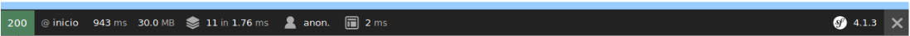
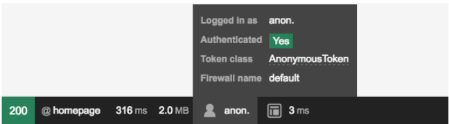
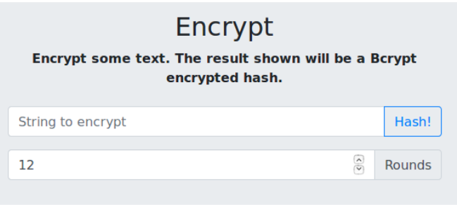

El sistema de seguridad de Symfony es muy potente y versátil, aunque también puede resultar algo complicado de entender y configurar. En esta sesión aprenderemos a establecer los elementos principales del mismo:
- El mecanismo de autenticación, es decir, establecer dónde están registrados los usuarios con acceso a la aplicación, para poder acceder a ellos y validar las credenciales de quien entra.
- El mecanismo de autorización, es decir, una vez se ha validado el usuario que accede, y siempre que éste sea correcto, determinar sus permisos y a qué recursos puede acceder y a cuáles no.
El archivo security.yaml. El firewall de Symfony
El archivo config/packages/security.yaml almacena la configuración general del sistema de seguridad de nuestra aplicación Symfony. Su contenido por defecto es éste:
xxxxxxxxxx
security
# https://symfony.com/doc/current/security.html#where-do-users-come-from-user-providers
# ...
firewalls
dev
pattern^/(_(profiler|wdt)|css|images|js)/
securityfalse
main
anonymoustrue
La sección firewalls es el núcleo principal de nuestro sistema de seguridad. Dentro vemos dos subsecciones: una llamada dev, que simplemente se asegura de que el profiler de Symfony y la barra de depuración (WDT, Web Debug Toolbar) no se ven afectados por nuestro sistema de seguridad en el modo desarrollo, de forma que podamos seguir teniendo la información de estado en la barra inferior que aparece al probar la aplicación:

El resto de elementos de la aplicación se gestionarán desde la subsección es main, donde pondremos la lógica de seguridad de nuestra aplicación. De hecho, el no tener una subsección pattern implica que automáticamente absorbe el resto de URLs que no hayan coincidido con ningún patrón anterior del firewall.
La subsección anonymous: true indica que se permite un acceso anónimo a las secciones que no estén protegidas. De hecho, si accedemos a la web de contactos y examinamos la barra inferior de estado, veremos que estamos logueados como anónimos.

Veremos a continuación cómo añadir elementos de autenticación en este apartado de configuración.
Establecer el modo de autenticación y origen de datos
Podemos establecer distintos modos de autenticación, y distintas fuentes de datos de donde tomar los usuarios para validar. El mecanismo más simple (y menos recomendado) consiste en utilizar una autenticación basic de HTTP (aquella que muestra un “prompt” básico para introducir login y password, como hicimos con Apache), y almacenar los usuarios en el propio archivo security.yaml. Los passwords pueden (deben) estar encriptados en dicho archivo, pero aún así, no es un mecanismo muy recomendable de almacenamiento.
Nos saltaremos esta opción, e iremos a la que realmente nos interesa: tendremos los usuarios registrados en una tabla de una base de datos MySQL (en este caso, de nuestra base de datos de contactos), y definiremos un formulario de login que utilizar para validarnos contra esa tabla a la hora de acceder a recursos protegidos.
Definir la entidad y tabla de usuarios
En nuestra aplicación de contactos, vamos a añadir una nueva entidad para almacenar los usuarios de la aplicación, y su correspondiente tabla asociada, empleando Doctrine. Los usuarios tendrán en este caso un id (autonumérico generado por Doctrine), un login, un password, un email y un rol (más adelante veremos para qué se utiliza el rol).
Por lo tanto, crearemos primero la entidad de esta forma:
Una vez creada la entidad, el siguiente paso es migrar los cambios a la base de datos, como ya hemos hecho previamente:
xxxxxxxxxxphp bin/console make:migrationphp bin/console doctrine:migration:migrate
Alternativamente a estos dos comandos, y en el caso de que dé algún conflicto con migraciones previas, también podemos ejecutar estos otros dos, que gestionan mejor las diferencias o novedades a migrar:
xxxxxxxxxxphp bin/console doctrine:migrations:diffphp bin/console doctrine:migrations:migrate
Podemos añadir a mano un usuario de prueba en la base de datos, con estos atributos:
- login: user
- password: 1234
- email: usuario@ieselcaminas.org
- rol: ROLE_USER
Insistimos, volveremos a tratar los roles más adelante. De momento dejaremos establecido éste para este usuario de prueba.
Implementar las interfaces requeridas
Para poder utilizar una entidad como fuente de usuarios que loguear, es necesario que dicha entidad implemente la interfaz UserInterface, lo que obliga a definir los métodos:
-
getRoles(), que devolverá un array con los roles del usuario (en este caso, cada usuario sólo tendrá un rol, que devolveremos en un array) -
getPassword(), que devolverá el password del usuario -
getUserName(), que devolverá el login del usuario -
getSalt(), que en ocasiones no es necesario emplear. Se emplea en mecanismos de codificación de passwords más avanzados que los que veremos en el curso. Así que en nuestro ejemplo devolveremos null. -
eraseCredentials(), que se emplea para eliminar información sensible o privada del usuario. Puede ser útil si, por ejemplo, se almacena el password del usuario sin encriptar. En primera instancia lo haremos así, pero luego lo encriptaremos, así que este método lo vamos a dejar vacío.
Además, conviene implementar la interfaz Serializable para poder serializar objetos de tipo Usuario y enviarlos entre las partes de la aplicación (más adelante veremos cómo obtener el objeto Usuario del usuario logueado). Esto implica añadir dos métodos más: serialize (para convertir el usuario en texto que enviar entre componentes) y unserialize (para convertir un texto en un objeto Usuario).
Con todo esto, nuestra entidad Usuario queda así (eliminamos los getters y setters generados automáticamente y que no vamos a emplear en realidad):
En el caso de la función unserialize, se le pasa como segundo parámetro un array de opciones. La opción allowed_classes que se utiliza en este ejemplo, puesta a false, hace que no se permita la serialización de objetos de ninguna clase (sólo los tipos simples que componen los atributos de la entidad Usuario, en este caso).
Configurar el origen de datos y el modo de autenticación
Vamos ahora a indicar dónde tiene que buscar Symfony los usuarios cuando alguien intente acceder al sistema. Para ello, vamos al archivo de configuración config/packages/ security.yaml, y añadimos un nuevo proveedor de datos, enlazado a la entidad Usuario:
xxxxxxxxxx
security
# https://symfony.com/doc/current/security.html#where-do-users-come-from-user-providers
providers
# ...
user_provider
entity
classApp\Entity\Usuario
propertylogin
Indicamos el nombre de la entidad, y el nombre del atributo que hace de login (definido en la entidad Usuario)
Después, algo más abajo en ese mismo fichero (subsección security > firewalls > main), establecemos que nos loguearemos mediante un formulario, que se activará con la ruta llamada login que definiremos después:
xxxxxxxxxx
security
# https://symfony.com/doc/current/security.html#where-do-users-come-from-user-providers
providers
# ...
main
anonymous~
form_login
provideruser_provider
login_pathlogin
check_pathlogin
En este caso, hemos anulado (puesto a null) el acceso anónimo (eso es lo que significa el símbolo ~ junto a anonymous). Por otra parte, indicamos que tanto para mostrar el formulario como para verificar el logueo, se acudirá a la misma ruta login, empleando como proveedor de usuarios el elemento user_provider que hemos definido antes, basado en la entidad Usuario.
Podemos, además, definir qué recursos se van a proteger con este formulario. Conviene, al menos, especificar un patrón de ruta que excluya al propio formulario de login, ya que de lo contrario entraríamos en un bucle infinito en el que, para acceder al formulario de login, debemos loguearnos con el formulario de login. Para ello, editamos la sección access_control al final del archivo security.yaml, e indicamos, al menos, dos rutas: una sin proteger para el login, y la otra protegida para lo que queramos (en este caso, el resto de la aplicación):
xxxxxxxxxx
security
# ...
access_control
path^/login rolesIS_AUTHENTICATED_ANONYMOUSLY
path^/ rolesROLE_USER
Finalmente, también podemos especificar el sistema de codificado del password. Por ahora no lo vamos a codificar, por lo que añadimos este subapartado al final (dentro de la sección security):
xxxxxxxxxx
security
# https://symfony.com/doc/current/security.html#where-do-users-come-from-user-providers
# ...
encoders
App\Entity\Usuarioplaintext
Definir la ruta y el formulario de login
Finalmente, vamos a crear un nuevo controlador llamado LoginController en nuestra carpeta de src/Controller, que definirá una nueva ruta /login para mostrar el formulario de login y verificar el error de validación, si es el caso. Puede quedar más o menos así:
xxxxxxxxxx
<?php
namespace App\Controller;
use Symfony\Component\Routing\Annotation\Route;
use Symfony\Bundle\FrameworkBundle\Controller\AbstractController;
use Symfony\Component\Security\Http\Authentication\AuthenticationUtils;
class LoginController extends AbstractController
{
/**
* @Route("/login", name="login")
*/
public function login(AuthenticationUtils $authenticationUtils)
{
$error = $authenticationUtils->getLastAuthenticationError();
return $this->render('login.html.twig', array(
'error' => $error,
));
}
}
Fijaos cómo le inyecta automáticamente AuthenticationUtils.
Podríamos obtener otros datos del proceso de validación. Por ejemplo, en caso de que el usuario no se valide correctamente, podríamos recuperar su login para volverlo a introducir automáticamente en la plantilla del formulario, y así evitar que lo tenga que volver a escribir. Para ello, tenemos el método getLastUsername() del objeto AuthenticationUtils. Basta con recuperar el dato y pasarlo a la plantilla:
xxxxxxxxxx
$error = $authenticationUtils->getLastAuthenticationError();
$lastUsername = $authenticationUtils->getLastUsername();
return $this->render('login.html.twig', array(
'error' => $error,
'lastUsername' => $lastUsername
));
El formulario de login al que se llama, login.html.twig, puede ser algo así:
xxxxxxxxxx
{% extends 'base.html.twig' %}
{% block title %}Contactos{% endblock %}
{% block body %}
<h1>Login</h1>
{% if error %}
<div>{{ error.messageKey }}</div>
{% endif %}
<form action="{{ path('login') }}" method="post">
<label for="username">Login:</label>
<input type="text" id="username" name="_username" />
<label for="password">Password:</label>
<input type="password" id="password" name="_password" />
<button type="submit">Entrar</button>
</form>
{% endblock %}
Como vemos, se tiene una bloque div condicional para mostrar un error de validación si es el caso. Además, el formulario tiene que cumplir unas normas: el campo de login debe llamarse _username (atributo “name”), y el campo de password debe llamarse _password.
Estas opciones pueden configurarse y personalizarse, pero esto queda fuera del propósito del curso (aquí tenéis más información).
Tras todos estos pasos, ya tendremos listo el sistema de autenticación. Puede parecer extraño, pero así es... En realidad, Symfony se hace cargo automáticamente de la validación del usuario cuando éste envía el formulario de login. Si hay algún error, se registrará dentro del controlador login y se renderizará el formulario con el mensaje de error. Si todo es correcto, se redirige al usuario automáticamente hacia la página que solicitó.
Algunas opciones avanzadas
Ahora que ya hemos aprendido a configurar una forma básica de autenticación con formulario de login, veamos algunos aspectos algo más avanzados de la configuración de la seguridad en Symfony.
Encriptar las contraseñas
Es conveniente que las contraseñas de los usuarios registrados no estén en texto plano sin encriptar, como en el ejemplo anterior. Podemos emplear, por ejemplo, un algoritmo de encriptación bcrypt para cifrarlas. Esto supone dos pasos extra:
-
Indicar a Symfony que los passwords están encriptados con
bcryptpara que aplique este algoritmo al encriptar cualquier password, incluido el que introduzca el usuario al loguearse, y así poder comparar si los dos passwords encriptados coinciden. Para hacer esto, debemos editar el archivo de configuraciónconfig/packages/security.yamle indicar que la entidadUsuarioutilizará el método de encriptación que hayamos escogido:xxxxxxxxxxsecurity# https://symfony.com/doc/current/security.html#where-do-users-come-from-user-providers# ...encodersApp\Entity\Usuarioalgorithmbcryptcost12El parámetro cost indica cuántas vueltas da el proceso para codificar el password, en un rango entre 4 y 31. Cuanto más largo sea, más costará encriptarlo. Existen otros métodos de encriptación aceptados, como md5, sha256... aunque según la documentación oficial de Symfony, bcrypt es el más recomendable.
-
Encriptar de forma automática los passwords de los usuarios cuando se registren. Si tuviéramos un formulario de registro en nuestra aplicación, y tenemos los datos del usuario guardados en un objeto usuario, y el password en sí en un objeto password, la encriptación sería como sigue:
xxxxxxxxxxuse Symfony\Component\Security\Core\Encoder\UserPasswordEncoderInterface;public function register(UserPasswordEncoderInterface $encoder) {$usuario = new App\Entity\Usuario();// Asignamos aquí el resto de atributos del usuario$passwordCodificado = $encoder->encodePassword($usuario, $password);$usuario->setPassword($passwordCodificado);// Guardar en la base de datos, si procede}Lo que hacemos es acudir a la configuración del archivo
security.yamlanterior para ver qué codificador se ha establecido, y mediante el objeto de tipoUserPasswordEncoderInterfaceque recibe como parámetro el método, y de su métodoencodePassword, codificar el password con ese mismo algoritmo. Dicho método recibe como primer parámetro el usuario sobre el que se está trabajando, y como segundo parámetro el password a codificar. Una vez codificado, se le asigna al usuario, y ya se podría guardar en la base de datos.
Para probar nuestro ejemplo de contactos, como no tenemos formulario de registro, vamos a codificar manualmente el/los password(s) que tengamos en la base de datos.
Podemos emplear para ello webs como ésta. En la sección de Encrypt, indicamos en el cuadro String to encrypt el password sin encriptar, y en el cuadro inferior establecemos el coste o número de vueltas. Después pulsamos el botón de Hash! y obtendremos el password encriptado.

Trabajar con roles
En los ejemplos hechos hasta ahora, nos hemos limitado a definir un campo rol en nuestra entidad Usuario, y a almacenar un usuario con rol ROLE_USER, pero sin prestar demasiada atención a lo que ese rol significa.
Para empezar, debemos saber que todos los roles que definamos en nuestra aplicación deben comenzar con el prefijo ROLE_ para que Symfony los trate como tales. Existe la posibilidad de configurar esta opción y poner roles más flexibles o arbitrarios, pero no entraremos en eso en este curso.
Symfony permite definir diferentes roles en una aplicación, y establecer una jerarquía entre ellos, de forma que un rol pueda hacer todo lo que hace otro más otras cosas. Además, podemos proteger el acceso a recursos para determinados roles, de forma que sólo ciertos roles (o roles que estén por encima de ellos en la jerarquía) puedan acceder.
Asignar distintos roles a distintos recursos protegidos
En el caso de que cada zona protegida de nuestra aplicación pueda tener asignados roles diferentes, basta con indicar el rol (o roles entre corchetes) que tienen permiso para cada zona. Por ejemplo, en este caso protegemos el acceso a cualquier ruta que empiece por /contacto para que sólo puedan acceder usuarios con rol ROLE_USER o ROLE_MANAGER, además de la configuración ya establecida en ejemplos previos:
xxxxxxxxxx
access_control
path^/login rolesIS_AUTHENTICATED_ANONYMOUSLY
path^/contacto rolesROLE_USER ROLE_MANAGER
path^/ rolesROLE_USER
Establecer jerarquías entre roles
Puede ser necesario también establecer una jerarquía entre roles, de forma que, si se tiene un rol de nivel superior, se tendrá acceso a todos los recursos que exijan un rol de nivel inferior. Para hacer esto, añadimos un subapartado role_hierarchy en nuestra sección security de config/packages/security.yaml, estableciendo dicha jerarquía.
En el siguiente ejemplo, el rol ROLE_ADMIN contiene a su vez a ROLE_USER, y el ROLE_SUPERADMIN contiene tanto a ROLE_ADMIN (y, por tanto, a ROLE_USER), como a ROLE_MANAGER.
xxxxxxxxxx
role_hierarchy
ROLE_ADMINROLE_USER
ROLE_SUPER_ADMINROLE_ADMIN ROLE_MANAGER
Comprobar roles desde los controladores y vistas
Existe también la posibilidad de forzar una comprobación de seguridad en el código de los controladores, basándose en si el usuario registrado tiene cierto rol o no, o simplemente si se ha autenticado o no. Por ejemplo, este controlador permite el acceso a su código si el usuario tiene el ROLE_ADMIN:
xxxxxxxxxx
/**
* @Route("/admin", name="admin")
*/
public function admin() {
$this->denyAccessUnlessGranted('ROLE_ADMIN', null,
'Acceso restringido a administradores');
// Resto del código del controlador
}
Este otro controlador simplemente comprueba si el usuario se ha autenticado correctamente antes de seguir:
xxxxxxxxxx
public function otroControlador() {
$this->denyAccessUnlessGranted('IS_AUTHENTICATED_FULLY');
// Resto del código del controlador
}
En cualquier caso, el método denyAccessUnlessGranted provoca que:
- Si el usuario aún no se ha autenticado, se le redirige a la página de login
- Si se ha autenticado, pero no tiene el rol requerido, se genera una página de error
HTTP 403(acceso prohibido). Esta página se puede personalizar (podéis consultar más información aquí).
También es posible comprobar un determinado rol o autenticación desde el código de una plantilla Twig, mediante la función is_granted. Esto puede servir para mostrar o no ciertos apartados de la vista.
xxxxxxxxxx
{% if is_granted('ROLE_ADMIN') %}
...
{% endif %}
Obtener el objeto usuario
Una vez autenticados, el objeto usuario se puede obtener a través del método getUser, normalmente desde dentro de un controlador. Así, podríamos tener algo como esto:
xxxxxxxxxx
/**
* @Route("/admin", name="admin")
*/
public function admin() {
$this->denyAccessUnlessGranted('IS_AUTHENTICATED_FULLY');
$usuario = $this->getUser();
return new Response("Bienvenido a /admin, " . $usuario->getUserName());
}
Desde una plantilla Twig también es posible acceder al usuario logueado, y obtener, por ejemplo, su login, con el objeto app.user:
xxxxxxxxxx
Bienvenido/a, {{ app.user.username }}
Saliendo de la aplicación (logout)
Podemos configurar el cierre de sesión o logout a través de archivos YAML exclusivamente. Basta con seguir estos dos pasos:
-
En primer lugar, establecemos que cuando se salga de la aplicación se redirigirá, por ejemplo, a la raíz de la misma. Esto se hace en el archivo
config/packages/security.yaml. Por ejemplo, para permitir cerrar sesión en el firewallmain, con el que estamos trabajando en nuestro ejemplo, haríamos esto:xxxxxxxxxxsecurity# https://symfony.com/doc/current/security.html#where-do-users-come-from-user-providers# ...firewallsdevpattern^/(_(profiler|wdt)|css|images|js)/securityfalsemainanonymous~form_loginprovideruser_providerlogin_pathlogincheck_pathloginlogoutpath/logouttarget/ -
En segundo lugar, definimos una ruta en el archivo
config/routes.yamlque asocie el nombrelogout(o como lo queramos llamar) con la ruta que hayamos definido antes (en este caso, la ruta/logout):xxxxxxxxxxlogoutpath/logout
Con esto, y algún enlace en nuestras plantillas para poder cerrar sesión (por ejemplo, en la plantilla base)...
xxxxxxxxxx
<div>
<a href="{{ path('logout') }}">Cerrar sesión</a>
</div>